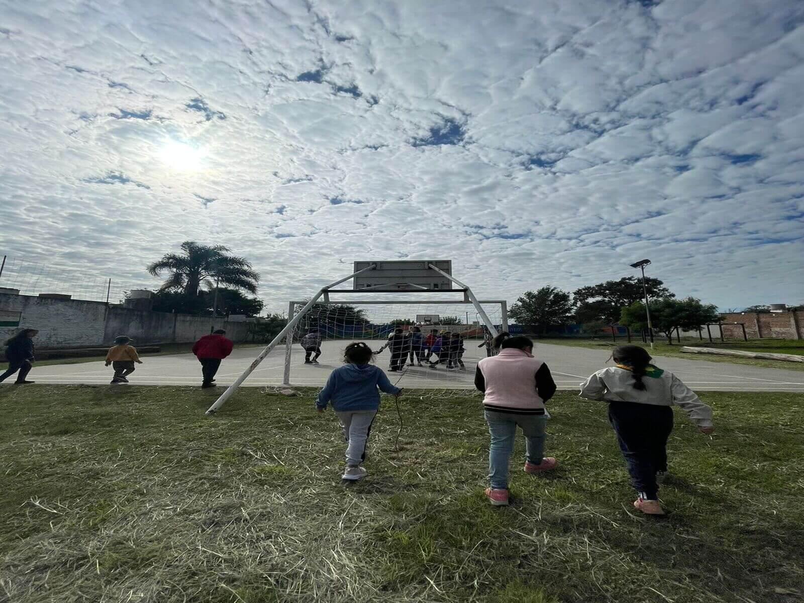
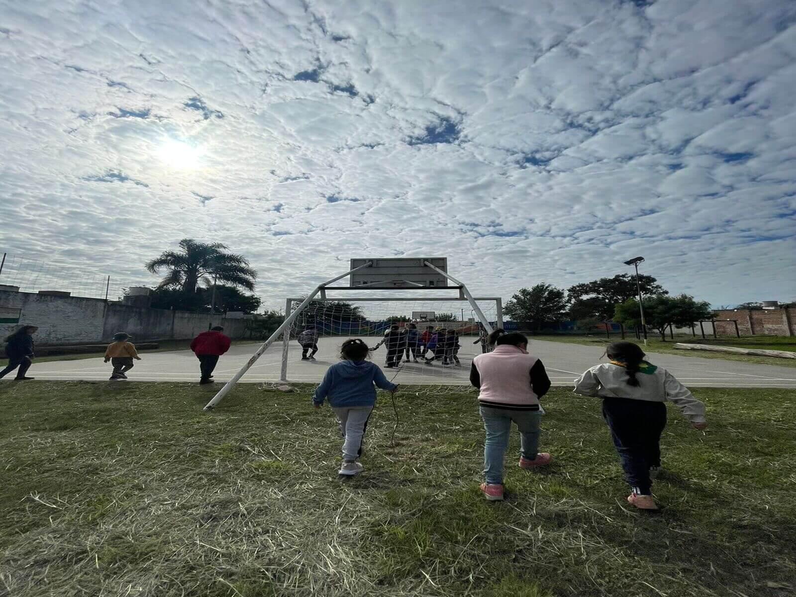

UN POCO DE NOSOTROS
Año 1992 - Yo estaba trabajando en el distrito y llega allí el Padre Pancho a manifestar su deseo que en barrio Dean Funes se forme un Grupo Scout. Entonces del distrito me preguntaron si yo quería abrir ese grupo y decidí hacerlo. Así fue como empecé a buscar gente, a convocar, a hacer propaganda y todo lo referente a la creación del grupo sin que nadie me dijera cómo se hacia. Todo comenzó con la convocatoria en la parroquia a familias que quisieran participar, se juntaron unas 14 familias y empecé a darles charlas informativas sobre lo que era el Movimiento Scout y también fui casa por casa para conocer esas familias.

En un principio sólo formamos una Manada, en donde su Akela fue Marta Cuello.
Nuestro primer promesado fue Walter Borreda y se realizo en el Campamento San Miguel de Arcangel.
¡YO SOY SCOUT, DE CORAZÓN. PROMESA Y LEY YO CUMPLIRÉ, Y A DIARIO MI BUENA ACCIÓN YO SIEMPRE HARÉ!
Llevamos el nombre de Deán Funes ya que nuestro barrio se llama de esa manera, fue propuesto por una mamá de una de las 14 familias que formaron parte del comienzo de toda esta aventura
GRUPO SCOUT 2023
Hoy 31 años después seguimos educando en valores y viendo y viviendo el escultismo a flor de piel cada día en nuestros niños y niñas, jóvenes y educadores.
Creemos más que nunca que estamos para hacer la diferencia y dejar el mundo en mejores condiciones del que lo encontramos
Organigrama 2023

Nuestras Instalaciones
 

Participación Protocolar
Invitados a rezar por la Patria e Instituciones en la Novena de Nuestra Señora del Rosario.
Acompañando con las familias e Instituciones del barrio a la Capilla de Dean Funes.
Agradecemos la participación por parte de las familias de nuestros beneficiarios.
Dia del Scout y la Buena Acción
Festejamos entre todos el día del Scout y la Buena Acción compartiendo y jugando
Contribuyendo cada sábado para ayudar a construir un mundo mejor donde las personas se desarrollen plenamente y jueguen un papel constructivo en la sociedad.
Esperamos hayan disfrutado todo!!
Siempre Listos!